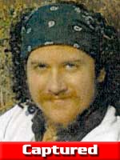

Center
for the Defense of Free Enterprise
Center
for the Defense of Free Enterprise
Ron Arnold: the Center applauds FBI for arrest of Michael Scarpitti on ecoterror charges
HOME ISSUES OPPOSITION PROJECTS DEFENDERS WISE USE BOOKSTORE ARCHIVE
|
Ron Arnold: the Center applauds FBI for arrest of Michael Scarpitti on ecoterror charges |
|
HOME ISSUES OPPOSITION PROJECTS DEFENDERS WISE USE BOOKSTORE ARCHIVE |
Michael Scarpitti, a.k.a. "Tre Arrow" captured
Suspected ecoterrorist recruiter apprehended in Canada
|
 |
FBI Wanted Poster
photos taken in 2000
(left, middle) and in
2002 (right).
BELLEVUE, Wa., March 15. Center for the Defense of Free Enterprise Executive Vice President Ron Arnold today congratulated a Canadian Tire security guard, the Victoria, British Columbia Police Department and the FBI in arresting fugitive radical environmentalist, Michael Scarpitti. Arnold was retained as expert consultant on ecoterrorism for a major study at the University of Arkansas Terrorism Research Center, funded by a grant from the National Institute of Justice (NIJ). Arnold has identified Scarpitti as a suspected Earth Liberation Front recruiter who grooms perpetrators for arson and other felony crimes in the name of nature protection.
Scarpitti's capture began with a trip Saturday, March 13, to Canadian Tire, a home improvement store in Victoria, B.C. A security guard, Anthony Bunting, kept a close eye on Scarpitti because he thought he was a "strange-looking guy."
Scarpitti was wearing a green beret, a baggy sweat shirt, a pair of corduroys and a string of red beads around his neck, Bunting said. Known in Oregon for going barefoot in the worst weather, Scarpitti was wearing sandals.
Scarpitti was known to travel around the country barefoot, hitching rides at truck stops and carrying a backpack and a black guitar case, according to the FBI.The guard watched as Scarpitti picked up the bolt cutters, then wandered to the screwdriver display. He stared off into space before he walked to the electronics aisle and awkwardly tried to shove the bolt cutters into his pants.
"He was getting frantic and was looking about," Bunting said. "He had a wild look on his face. He was hoping no one would see what he was trying to do."
The security guard said Scarpitti struggled with the bolt cutters, so he pulled them out and held them at his side as he left the store. When Bunting confronted him, Scarpitti fought and the two men ended up on the ground, the guard said. When Bunting got control, Scarpitti identified himself as Joshua Murray and said he was 22.
About that time, a Victoria police cruiser pulled into the store parking lot. The officers patted Scarpitti down and found several bags of unidentified food and a clump of hair in his pocket.
"It grossed the police officers right out," Bunting said.
Victoria Constable Rick Anthony said the two officers thought Scarpitti was older than the age he'd given. Scarpitti also said he was Canadian, but couldn't say where he was born.
"He couldn't even give his parents' names," Anthony said.
The officers took his fingerprints and sent them to the FBI. On Monday, the FBI identified him as Scarpitti, aka Tre Arrow.
Scarpitti first drew attention in July 2000 when he climbed 30 feet onto a window ledge of the U.S. Forest Service headquarters in downtown Portland, Oregon and spent 11 days there protesting the Eagle Creek timber sale.
He later joined activists outside Portland's federal courthouse to denounce a grand jury investigation of crimes attributed to the Earth Liberation Front.
In October 2001, he suffered several broken bones when he fell 60 feet from a hemlock tree where he had perched to protest a logging sale in Oregon's Tillamook County.
Scarpitti also ran for Congress -- as Tre Arrow -- on the Pacific Green Party ticket in November 2000, capturing 15,763 votes, about 6 percent, in an unsuccessful bid to unseat U.S. Rep. Earl Blumenauer, D-Ore.
The following Easter, three Mack trucks belonging to Portland's Ross Island Sand & Gravel were set on fire, causing $210,000 damage. The Earth Liberation Front claimed responsibility for the blaze, accusing the company of harming the environment.
"In their Easter basket we decided to leave four containers with gasoline and a time-delayed fuse placed under two of their cement trucks," the saboteurs wrote.
The arson marked the first time the Earth Liberation Front, which had claimed responsibility for a string of arsons across the nation, had struck in Portland. FBI officials estimate that the front has caused more than $100 million damage since 1996.
On June 1, 2001, arsonists set fire to two logging trucks and a front loader belonging to Ray A. Schoppert Logging of Estacada, the company that had purchased rights to log federal timber in the Eagle Creek area. Cascadia Forest Alliance, an environmental group Scarpitti was affiliated with, denied taking part in the arson, which caused $50,000 damage.
In the summer of 2002, federal agents focused on Jacob D.B. Sherman, a Portland State University student, when they learned he had returned to his mother's home after the log-truck arson with singed eyebrows and reeking of gasoline.
Sherman, Scarpitti and two other activists, Angela Cesario and Jeremy Rosenbloom, were charged on Aug. 13, 2002, for their roles in the log-truck arson, which then-U.S. Attorney Mike Mosman declared a "major first step in investigating eco-terrorism."
Cesario, Rosenbloom and Sherman are serving federal prison terms.
Sherman, who is serving a three year sentence, "immediately began to cooperate" with investigators after his arrest, according to court documents, and pointed investigators toward others involved in the bombings.
Court documents filed by Sherman's attorney identify Scarpitti as "the leader and instigator" of the arsons.
Scarpitti "groomed" Sherman, the documents claim, introducing him to radical protesting. Sherman was a student at Portland State University at the time.
News of the weekend arrest in Canada delighted Lyle Schoppert, the 48-year-old acting president of Ray A. Schoppert Logging. He pointed out that one hour after his company's trucks were burned, drivers would have been sitting in them.
"I believe the world's a little safer with him behind bars," Schoppert said. "I hope he gets put away for a long time. But it's a pretty sympathetic world."
The FBI's search for Scarpitti turned up credible sightings as far away as Pennsylvania, where the Earth Liberation Front claimed responsibility for destroying a $500,000 construction crane in March 2002.
On Monday, federal authorities said they didn't know how long Scarpitti had lived in Canada. He has declined to be interviewed by Canadian police, Jordan said.
Scarpitti, being held in Victoria, faces charges in a Canadian provincial court on charges of theft, assault and obstructing a police officer. Federal officials in the United States are working to extradite Scarpitti as soon as possible. He faces arson and conspiracy charges in Oregon.
The FBI is offering a reward of up to $25,000 for information leading to Scarpitti's arrest. It isn't clear whether the Canadian Tire security guard who brought Scarpitti to police will get the reward.
Robert Jordan, the FBI's special agent in charge in Portland, said, "It is very difficult to capture someone who lives a marginal existence. He didn't rely on credit cards or have a driver's license ... the sort of things that make it easy for an individual to be captured."
The FBI lists the ELF as its No. 1 priority among domestic terrorist groups.
Rep. Greg Walden (R-OR) welcomed news of Scarpitti's arrest.
"Terrorism is not how our political system should operate, nor should our government tolerate it," Walden said.
Arnold agreed with Rep. Walden and said, "Ecoterrorism will not be tolerated. The Center for the Defense of Free Enterprise and its thousands of members nationwide congratulate the law enforcement officers who apprehended Michael Scarpitti. We hope this is only the first of many such important arrests. This key suspect appears to have close connections to other well-known ELF figures such as armed-revolution advocate Craig Rosebraugh and convicted Animal Liberation Front felon Rodney Coronado. Scarpitti's arrest will give law enforcement a great opportunity to identify and track down other recruiters, organizers and funders of the ELF. We applaud the FBI and offer any assistance we may to federal prosecutors."
RETURN TO ECOTERRORISM TOP STORIES TOP PAGE
RETURN TO CENTER FOR THE DEFENSE OF FREE ENTERPRISE HOME PAGE